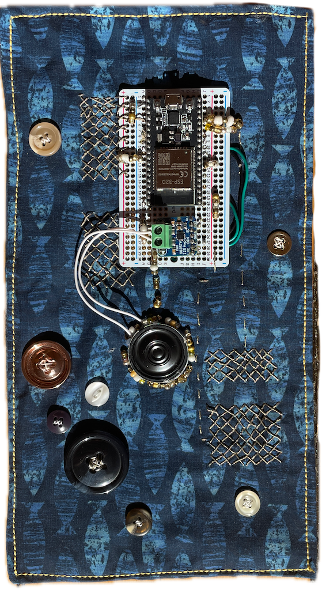
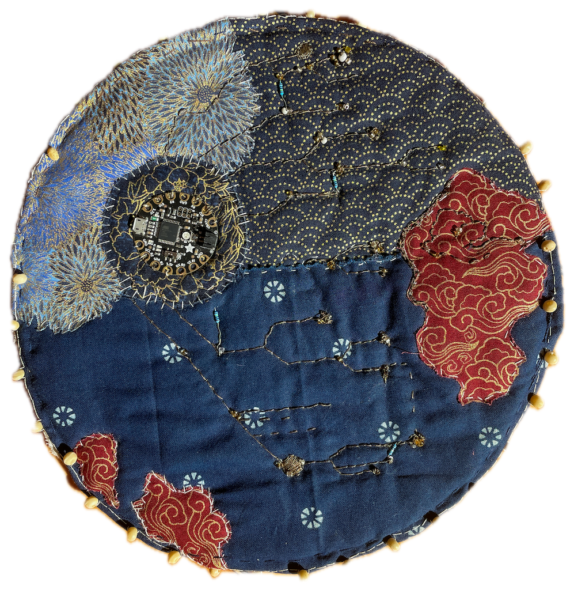
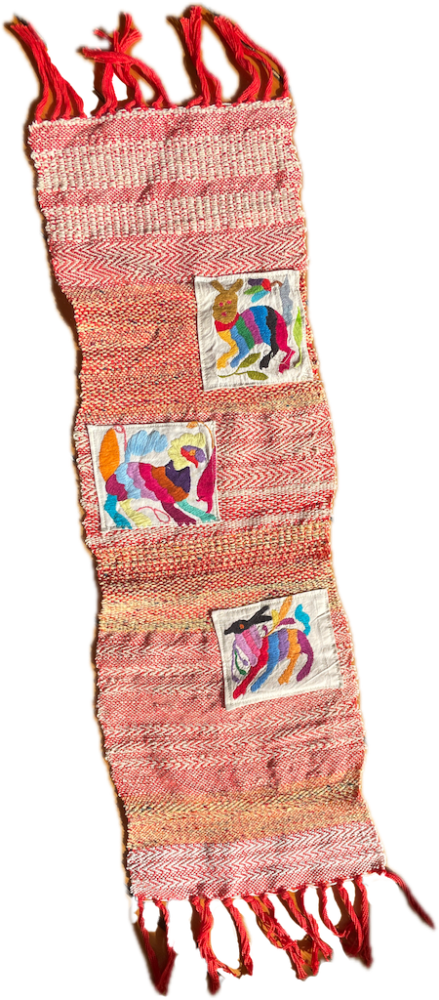
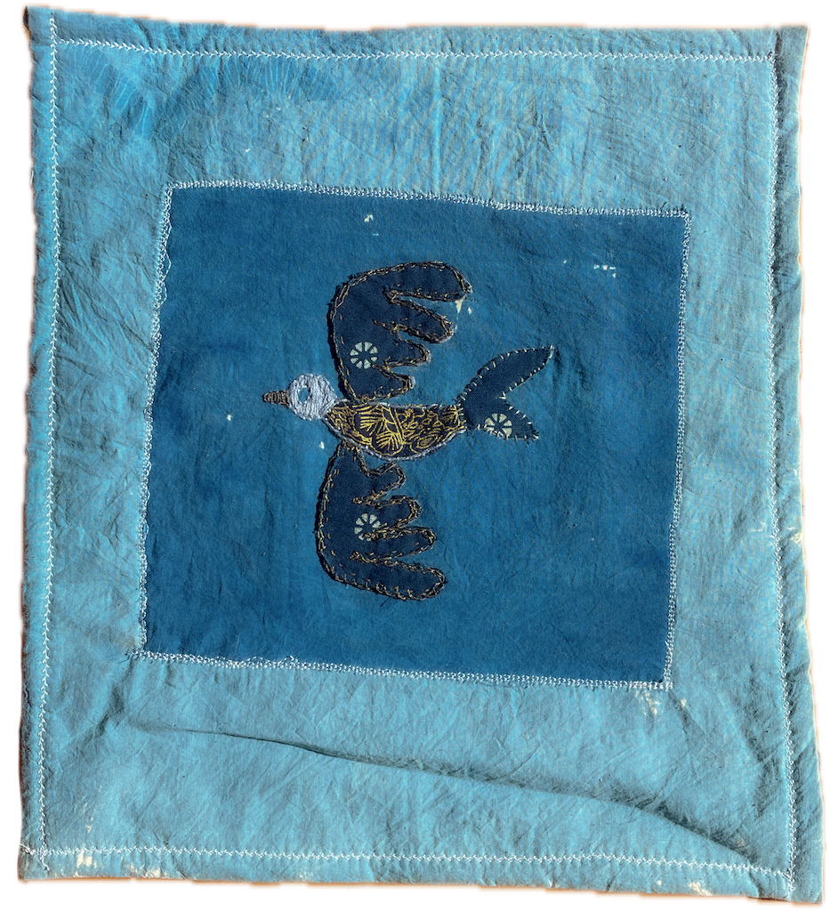
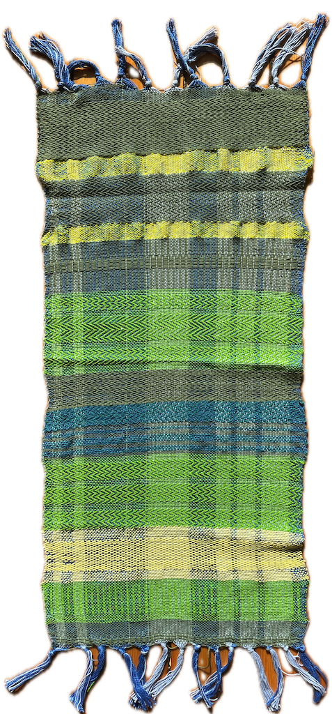
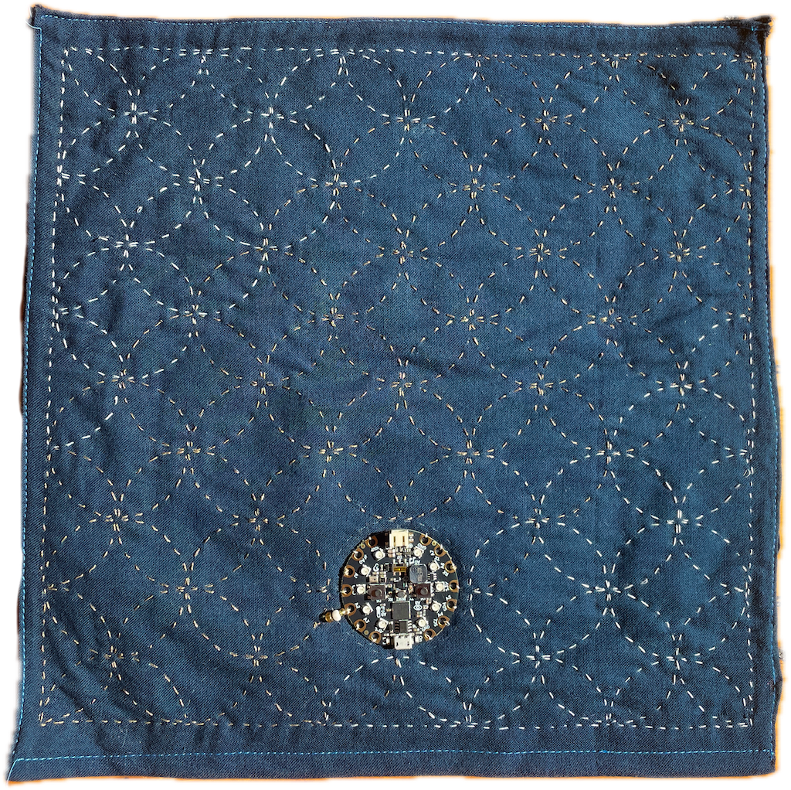
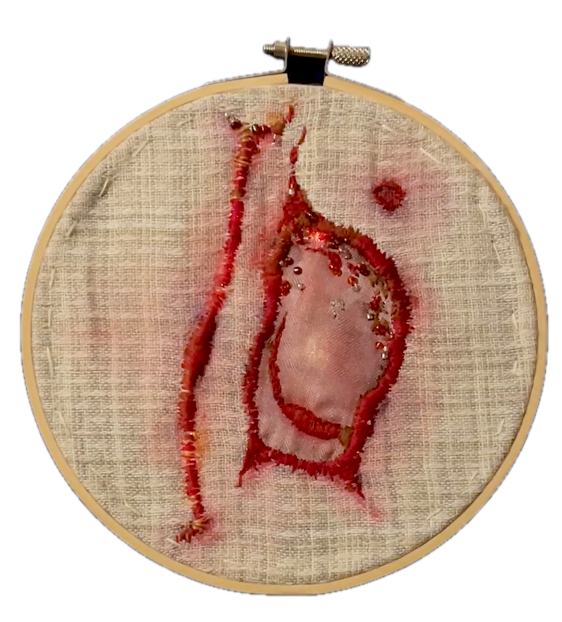
Hi! I made this web experience to celebrate textile-making as a practice, as the language they became for my aunt.
The experience contains sound. You can explore by moving your mouse around and dragging the text.










